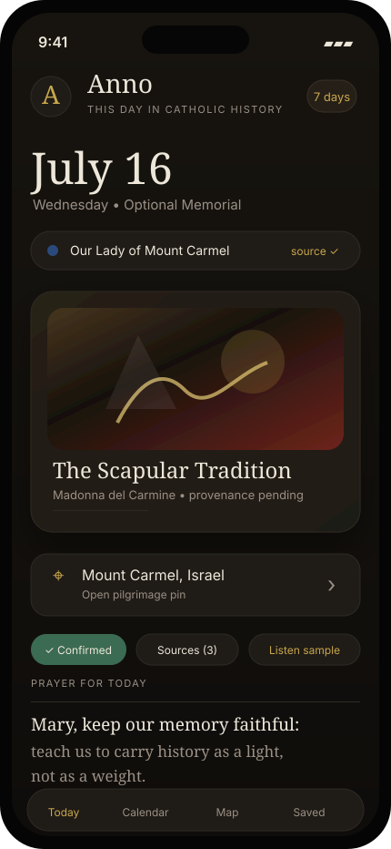
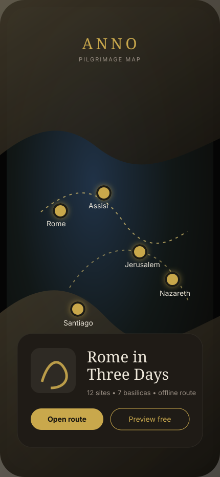

Today
Instant value: date, liturgical context, sacred art, pilgrimage pin, source confidence, and a short historically grounded prayer.

Dark-mode-first native iOS direction: gold leaf on warm near-black, New York/SF typography, sacred art as the ornament, and monetization through archive, maps, audio, sources, and route utility.
Instant value: date, liturgical context, sacred art, pilgrimage pin, source confidence, and a short historically grounded prayer.

Premium travel utility: sacred sites, route packs, offline content, and Apple Maps handoff without turning the app into a tour operator.

Sharper revenue, cleaner trust: sell archive depth, art, audio, source dossiers, Vietnamese content, and routes. No ads, no guilt.